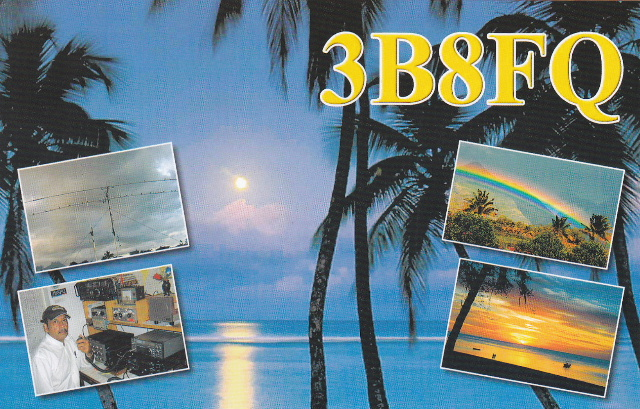
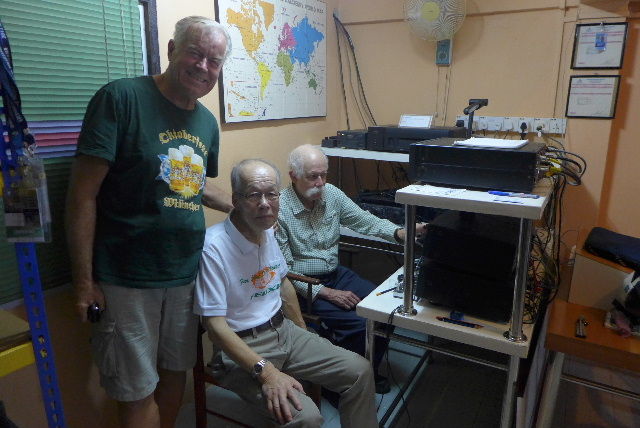

Flash ! DX


 

|
|
|
|

|
|
|
[Back Issues Mar.2015]
TIME:UTC(JST-09:00)
Report from JA1RJU(PM95sq)
31.Mar.2015(15:00c)
(CP6B/B 02:41- 50.040 CW Beacon into JS6=Okinawa)
(PT9BCN/b 02:43- 50.081 CW Beacon into JS6=Okinawa)
(LU4TC 03:04- 50.060 CW Beacon into JS6~Okinawa)
VK4RTL/b 03:48- 50.282 CW Beacon
VK6RSX/b 03:48- 50.304 CW Beacon
V73SIX/B 05:15- 50.0117 CW Beacon
V73SIX/B 06:30- 50.0117 CW Beacon
5W1SA 08:00 50.110 CW CQ CQ
(FR1GZ/b 08:33- 50.0385 CW Beacon into JA6)
FK8CP 08:55 50.110 CW CQ
Report from JA1RJU(PM95sq)
30.Mar.2015(15:00f)
V73SIX/B 04:35- 50.0117 CW Beacon
VK4WTN 04:58 50.110 CW CQ
VK4EK 05:16 50.276-0.272 WSJT JT65a CQ -19dB
VK4UH 05:24 50.276+0.304 WSJT JT65a CQ -07dB
VK4EK 05:30 50.276-0.005 WSJT @ JT65a --12dB/-14dB(30W)
VK4UH 05:50 50.276+0.176 WSJT JT65a CQ -09dB
VK4RTL/b 05:50- 50.282 CW Beacon
V73SIX/B 06:00- 50.0117 CW Beacon
VK4BLK 06:23 50.276-0.135 WSJT JT65a CQ -07dB
VK4FNQ 06:38 50.276-0.530 WSJT JT65a CQ -06dB
VK4WTN 06:39 50.276+0.519 WSJT JT65a CQ -06dB
VK5PO 07:32 50.276-0.030 WSJT JT65a CQ -12dB
9M6XRO 08:59 50.110 CW CQ RST599
DU1EV/B 09:05- 50.008 CW Beacon
Report from JA1RJU(PM95sq)
29.Mar.2015(15:00d)
VK4UH 01:10 50.276-0.011 WSJT JT65a CQ -23dB
VK4UH 01:20 50.276-0.011 WSJT JT65a CQ -19dB
VK3FZ 04:33 50.276-0.250 WSJT JT65a CQ -19dB
VK4UH 04:49 50.276-0.517 WSJT JT65a -09dB
VK6KXW 05:11 50.276+0.078 WSJT JT65a -13dB
VK6OX 05:27 50.276+0.291 WSJT JT65a -08dB
VK4RTL/b 06:20- 50.282 CW Beacon
VK4FNQ 06:33 50.276-0.474 WSJT JT65a CQ -05dB
VK4FNQ 06:53 50.276-0.544 WSJT JT65a CQ -04dB
VK4FNQ 07:26 50.276-0.546 WSJT JT65a CQ -02dB
(3B9FR 07:51 50.105 CW JA6)
(3B9FR 08:04 50.105 CW JA5-6)
VK4RTL/b 09:08- 50.282 CW Beacon
VK4TVL/b 09:08- 50.295 CW Beacon
VK6RSX/b 09:08- 50.304 CW Beacon
(3B9FR 09:10 50.115 CW/SSB CQ JA JA5-6)
Report from JA1RJU(PM95sq)
28.Mar.2015(15:00d)
FK8CP 03:11 50.110 CW CQ
VK4ZJB 03:28 50.110/145 SSB
VK4UH 04:30 50.276-0.062 WSJT JT65a -08dB
VK4BLK 05:19 50.276+0.622 WSJT JT65a CQ -07dB
VK4ZB 06:55 50.276-0.455 WSJT JT65a -05dB
VK4BLK 08:13 50.276-0.035 WSJT JT65a -04dB
VK4RTL/b 08:30- 50.282 CW Beacon
VK4RSC/b 08:30- 50.2846 CW Beacon
VK4TVL/b 08:30- 50.295 CW Beacon
V73SIX/B 08:30- 50.0117 CW Beacon
VK4RGG/b 08:30- 50.057 CW Beacon
VK4ZJB 08:35 50.103 CW CQ
FK8CP 08:45 50.110 CW CQ SEA
VK7RAE/b 09:30- 50.057 CW Beacon
Report from JA1RJU(PM95sq)
27.Mar.2015(15:00g)
VK4KEE 04:46 50.276+0.264 WSJT JT65a CQ -08dB
VK4QG 04:58 50.276+0.766 WSJT JT65a CQ -05dB
VK4RTL/b 05:10- 50.282 CW Beacon
VK4RSC/b 05:10- 50.2846 CW Beacon
VK5RBV/b 05:10- 50.314 CW Beacon
V73SIX/B 05:15- 50.0117 CW Beacon
VK4RGG/b 05:15- 50.057 CW Beacon
VK8MS 05:16 50.110 CW
VK5PO 05:18 50.099 CW
VK5XDX 05:20 50.105 CW CQ
FK8SIX/B 05:23- 50.080 CW Beacon FSK
VK5BC 05:26 50.276+0.595 WSJT JT65a -03dB
VK4TVL/b 05:30- 50.295 CW Beacon
VK2RHV/b 05:30- 50.288 CW Beacon
VK4KAY 05:30 50.110 SSB QSO with KG6JDX
VK4ZJB 05:36 50.120 CW
VK4EK 05:40 50.110 SSB QSO with KG6JDX
VK5ZK 05:50 50.276-0.544 WSJT JT65a -11dB Calling 8J2VE
VK4UH 05:52 50.276-0.544 WSJT JT65a -06dB Calling 8J2VE
VK6KXW 06:07 50.276-0.544 WSJT JT65a -11dB Calling 8J2VE
VK4KEE 06:14 50.276-0.544 WSJT JT65a -10dB Calling 8J2VE
VK4FNQ 06:20 50.276+0.538 WSJT JT65a CQ -04dB
FK8CP 06:22 50.110 SSB CQ South East Asia!
VK5BC 06:24 50.110 SSB CQ
VK4MA 06:30 50.097 CW
VK5XDX 06:30 50.105/094 CW
VK6APZ 06:32 50.140 SSB
VK4QG 06:41 50.276+0.766 WSJT JT65a CQ -05dB
VK6IQ 06:47 50.276+0.048 WSJT JT65a TEST -16dB
VK4AMG 07:20 50.105/107 CW CQ
DU1EV/B 07:50- 50.008 CW Beacon
VK4RSC/b 08:00- 50.2846 CW Beacon
VK6RSX/b 08:00- 50.3046 CW Beacon
DU7/PA0HIP 08:03 50.110 CW
VK6KXW 08:08 50.107 CW
9M2IDJ 08:08 50.110/125 SSB QSY to 50.125
VK6ZFG 08:10 50.110 SSB CQ
DU1KA 08:32 50.110 CW
VK6RO 08:35 50.110 CW
BG9MFY 08:43 50.110 CW CQ
VK4UH 08:47 50.110/120 SSB CQ QSY
VK4FNQ 09:05 50.276-0.468 WSJT JT65a CQ -02dB
FK8CP 09:18 50.110 CW CQ
Report from JA1RJU(PM95sq)
26.Mar.2015(15:00d)
VK4UH 03:57 50.276-0.070 WSJT JT65a CQ -25dB
VK5BC 04:14 50.276+0.213 WSJT JT65a CQ -03dB
VK4RTL/b 04:15 50.282 CW Beacon
VK5BC 04:24 50.276.0 WSJT @ JT65a -05dB/-01dB(Call=>10W)
VK4WTN 04:43 50.104 CW CQ
VK5PO 05:47 50.276-0.121 WSJT JT65a CQ -05dB
HL/VK6JJJ 06:09 50.276+0.145 WSJT JT65a -05dB
VK4EX 06:31 50.276-0.115 WSJT JT65a CQ -06dB
VK4KEE 06:58 50.276+0.312 WSJT JT65a CQ -02dB
VK4BLK 07:40 50.276-0.175 WSJT JT65a CQ -03dB
DU7/PA0HIP 08:02 50.110 CW CQ
VK4BLK 08:15 50.276-0.097 WSJT JT65a CQ -05dB
(3B9FR 08:16 50.105 CW into JA5/6)
VK3DUT 08:36 50.110 SSB CQ
N7ET/DU7 08:53 50.103 CW CQ
Report from JA1RJU(PM95sq)
25.Mar.2015(15:00k)
VK4UH 04:03 50.276+0.307 WSJT JT65a CQ -08dB
VK4RGG/b 04:30- 50.057 CW Beacon
VK4RTL/b 04:30- 50.282 CW Beacon
VK4RSC/b 04:30- 50.2846 CW Beacon
VK4AMG 04:35 50.110 CW
VK4UH 04:44 50.276.0 WSJT JT65a CQ -05dB
VK4KEE 04:47 50.276+0.272 WSJT JT65a CQ -04dB
VK4UH 05:12 50.276+0.013 WSJT JT65a CQ -08dB
VK4KE 05:21 50.110 CW
V73SIX/B 05:23- 50.0117 CW Beacon
FK8SIX/B 05:23- 50.080 CW Beacon FSK
VK4AMG 05:24 50.102/110 CW CQ
VK4EK 05:33 50.276-0.350 WSJT JT65a CQ -11dB
VK4QG 05:34 50.276-0.073 WSJT JT65a CQ -01dB
VK4BLK 05:40 50.276+0.218 WSJT JT65a CQ -01dB
VK4QG 05:52 50.276-0.059 WSJT JT65a CQ -08dB
VK5PO 06:28 50.276-0.226 WSJT JT65a CQ -15dB
VK4BLK 06:33 50.276+0.619 WSJT JT65a CQ -03dB
V73SIX/B 06:45- 50.0117 CW Beacon
VK4UH 06:56 50.276+0.008 WSJT JT65a CQ -11dB
VK4FNQ 06:59 50.276-0.301 WSJT JT65a CQ -05dB
VK5PO 07:12 50.276-0.191 WSJT JT65a -09dB
VK4UH 07:16 50.276+0.188 WSJT JT65a CQ -06dB
VK4FNQ 07:23 50.276+0.159 WSJT JT65a CQ -06dB
VK4WTN 07:32 50.110 CW CQ
VK5PO 07:44 50.276.0 WSJT @ JT65a -09dB/-17dB(CQ=>15W)
VK6DU 07:58 50.276-0.242 WSJT JT65a -08dB
VK6DU 08:04 50.276-0.242 WSJT @ JT65a -05dB/-02dB(Call=>10W)
DU1EV/B 08:37- 50.008 CW Beacon
DU3LA 08:37 50.115 SSB/CW RS59/599
9M6XRO 08:38 50.103 CW RST599
DU7/PA0HIP 08:39 50.103 CW Calling 9M6
9M6XRO 08:40 50.103 CW RST599 "CQ ZS"
VK4MA 08:50 50.100 CW
VK6KXW 08:52 50.098 CW CQ
VK6DU 08:56 50.105 CW CQ DX
DU7/PA0HIP 08:59 50.110 CW RST599 "CQ AF"
VK4WTN 09:14 50.103 CW CQ
DU1/JA3FJE 09:23 50.120/195 SSB CQ RS59+++
FK8CP 09:30 50.110 CW CQ
N7ET/DU7 09:37 50.103 CW CQ RST599
VK4BLK 09:46 50.276+0.433 WSJT JT65a CQ -07dB
VK4FNQ 09:59 50.276-0.525 WSJT JT65a CQ -07dB
VK4BLK 10:18 50.276-0.255 WSJT JT65a CQ -08dB
VK4QG 10:36 50.276-0.275 WSJT JT65a CQ -15dB
VK4KEE 10:44 50.276+0.140 WSJT JT65a CQ -10dB
VK4WTN 10:57 50.276+0.592 WSJT JT65a -10dB
VK2BLS 11:08 50.276+0.215 WSJT JT65a -14dB
VK6KXW 11:27 50.276+0.243 WSJT JT65a CQ -14dB
VK4QG 11:54 50.276-0.493 WSJT JT65a CQ -13dB
VK4BLK 12:17 50.276+0.614 WSJT JT65a -18dB
VK4RTL/b 12:20- 50.282 CW Beacon
VK6RSX/b 12:20- 50.304 CW Beacon
VK8VF/b 12:20- 50.310 CW Beacon
Report from JA1RJU(PM95sq)
24.Mar.2015(15:00e)
V63KI 06:10 50.150 SSB
VK5PO 06:27 50.276-0.087 WSJT JT65a CQ -07dB
VK4FNQ 06:35 50.276-0.398 WSJT JT65a CQ -08dB
VK6OX 07:17 50.276-0.137 WSJT JT65a CQ -19dB
VK6OX 08:47 50.276+0.226 WSJT JT65a
DU1EV/B 08:50- 50.008 CW Beacon RST599
DU7/PA0HIP 08:52 50.102 CW CQ RST599
VK4FNQ 09:26 50.276+0.519 WSJT JT65a CQ -19dB
VK4KEE 09:48 50.276+0.554 WSJT JT65a CQ -08dB
VK4KEE 10:40 50.276+0.554 WSJT JT65a CQ -12dB
VK4KEE 11:04 50.276+0.560 WSJT JT65a CQ -10dB
VK4KEE 12:03 50.276+0.258 WSJT JT65a CQ -15dB
VK8MS 12:55 50.110 CW RST599
DU7/PA0HIP 13:11 50.110 CW CQ RST599
VK6RSX/b 13:20- 50.304 CW Beacon
VK8VF/b 13:20- 50.310 CW Beacon
Report from JA1RJU(PM95sq)
23.Mar.2015(15:00e)
VK6KXW 06:19 50.276+0.361 WSJT JT65a CQ -21dB
VK6KXW 06:29 50.276 WSJT @ JT65a -08dB/-06dB
VK6OX 06:35 50.276+0.256 WSJT JT65a CQ -06dB
VK5BC 06:36 50.276-0.250 WSJT JT65a
VK4FNQ 06:39 50.276-0.433 WSJT JT65a CQ -03dB
V63KI 06:47 50.140 SSB CQ RS59+
DU1EV/B 07:25- 50.008 CW Beacon
VK6RPH/b 07:25- 50.066 CW Beacon
VK6RSX/b 07:25- 50.304 CW Beacon
VK6KXW 07:52 50.110 CW CQ
BA8AT 08:00 50.110 CW CQ
DU7/PA0HIP 08:26 50.110 CW CQ RST599
DU7/PA0HIP 08:30 50.110 SSB/CW CQ RST59
Report from JA1RJU(PM95sq)
22.Mar.2015(15:00f)
VK4UH 04:40 50.276+0.415 WSJT JT65a CQ -10dB
VK4QG 04:55 50.276-0.266 WSJT JT65a CQ -08dB
VK4CZ 05:06 50.276+0.030 WSJT JT65a CQ -08dB
VK4RTL/b 05:20- 50.282 CW Beacon
V73SIX/B 05:20- 50.0117 CW Beacon
VK4WM 05:24 50.110 CW CQ
VK4BG 05:26 50.110 CW CQ
VK5XDX 05:37 50.110 CW CQ
VK5PO 06:25 50.276-0.046 WSJT JT65a CQ -06dB
VK6OX 06:37 50.2756+0.202 WSJT JT65a -06dB
VK4CZ 06:42 50.2756+0.412 WSJT JT65a CQ -05dB
VK5XDX 06:53 50.106 CW CQ
DU1EV/B 07:00- 50.008 CW Beacon
V73SIX/B 07:00- 50.0117 CW Beacon
V63KI 07:10 50.160 SSB @ UP5-10 RS59
VK6ZFG 07:17 50.150 SSB RS59+
VK6APZ 07:20 50.135 SSB RS59+
VK6KXW 07:23 50.110 CW CQ
VK6DU 07:26 50.105 CW
DU3LA 07:27 50.102 CW CQ
DS4EOI/2 07:29 50.109 CW CQ
VK6OX 07:30 50.110 SSB
DU1IST 07:30 50.235 RTTY RST599 UP
DU1IST 08:12 50.235 RTTY PSK31 UP
VR2VBV 08:12 50.115 SSB
VR2VAZ 08:32 50.120 SSB
VR2VBV 08:49 50.115 SSB @ RS59/59
DU3LA 08:50 50.085 RTTY RST599
DU7/PA0HIP 09:19 50.110 CW CQ RST599
DU1EV/B 09:20- 50.008 CW Beacon
VK6OX 09:37 50.276 WSJT @ JT65a -09dB/-18dB
Report from JA1RJU(PM95sq)
21.Mar.2015(15:00f)
V73SIX/B 03:57- 50.0117 CW Beacon
VK6OX 05:05 50.276-0.093 WSJT JT65a -17dB
VK6KXW 05:39 50.276+0.167 WSJT JT65a CQ -22dB
VK5PO 05:58 50.276+0.579 WSJT JT65a CQ -06dB
VK5BC 06:16 50.276+0.463 WSJT JT65a -09dB
VK2BLS 06:21 50.276+0.579 WSJT JT65a CQ -13dB
VK2ZQ 06:31 50.276-0.386 WSJT JT65a -22dB
BG6CJR 07:33 50.276-0.452 WSJT JT65a -08dB
BG6RI 07:51 50.276+0.571 WSJT JT65a -24dB
DU7/PA0HIP 08:00 50.110 CW CQ RST599
DU1EV/B 08:01- 50.008 CW Beacon
BG6CJR 08:09 50.276 WSJT @ JT65a -09dB/-15dB
Report from JA1RJU(PM95sq)
20.Mar.2015(15:00f)
VK4UH 03:22 50.276 WSJT JT65a CQ -06dB
VK4UH 03:40 50.276+0.110 WSJT JT65a CQ -04dB
VK3BDL 05:13 50.130 SSB
VK2RHV/b 05:14- 50.288 CW Beacon
VK6RSX/b 05:14- 50.304 CW Beacon
VK4RTL 05:14- 50.282 CW Beacon
VK3DU 05:19 50.140 SSB
VK3AMK 05:23 50.1225 SSB
VK5PO 05:24 50.099 CW CQ
VK2BHO 05:25 50.110 CW CQ
V73SIX/B 05:27- 50.0117 CW Beacon
V73NS 05:27 50.107 CW
VK3WE 05:30 50.115 CW
VK3XQ 05:35 50.120 SSB CQ
VK2ZQ 05:36 50.136 SSB
VK2BZE 05:38 50.1355 SSB
FK8HA 05:39 50.130 SSB CQ RS59++
FK8SIX/b 05:40- 50.080 CW Beacon FSK
VK3AMK 05:41 50.099 RTTY
VK2TS 05:43 50.110 SSB
VK4ZJB 05:49 50.110 SSB
VK2EBN 05:52 50.105 CW
VK2BHO 05:58 50.100 CW
VK4ZJB 06:05 50.110 SSB
VK4WTN 06:06 50.105 CW
VK4ZB 06:24 50.276+0.511 WSJT JT65a CQ-08dB
VK4EK 06:30 50.276-0.057 WSJT JT65a -13dB
VK4QG 06:39 50.276-0.108 WSJT JT65a -18dB
KH2/JR3CNQ 06:59 50.088 CW @ UP RST599/599
9M6XRO 07:02 50.103 CW
KH2/JR3CNQ 07:08 50.150 SSB RS59++ (QSL to Home QTH)
DK7GG/DU6 07:13 50.130 SSB RS59
DU3LA 07:27 50.107 CW
KG6DX 07:28 50.100 CW RST599+
V73SIX/B 07:28- 50.0117 CW Beacon
DU1EV/B 07:29- 50.008 CW Beacon
DU3LA 08:00 50.114 SSB
VK4BLK 08:03 50.276-0.371 WSJT JT65a -17dB
KH2/JR3CNQ 08:16 50.150 SSB RS59+
DU1IST 08:16 50.135 CW RST599
DU1/JA3FJE 08:29 50.196 SSB RS59+
DU7/PA0HIP 08:38 50.110 CW CQ
DU1EV/B 09:10- 50.008 CW Beacon
Report from JA1RJU(PM95sq)
19.Mar.2015(15:00d)
VK4RSC/b 04:18- 50.285 CW Beacon
FK8IK 04:19 50.116 CW CQ
FK8SIX/b 04:20- 50.080 CW Beacon FSK
V73SIX/B 04:20- 50.0117 CW Beacon
VK4RGG/b 04:20- 50.0577 CW Beacon
V73NS 04:24 50.107 CW CQ
FK8CP 04:31 50.110 CW CQ-SEA RST599+
VK4QG 05:17 50.276-0.256 WSJT JT65a CQ -16dB
VK4QG 05:51 50.276-0.248 WSJT JT65a CQ -07dB
V73SIX/B 08:09- 50.0117 CW Beacon
DU1EV/B 08:10- 50.008 CW Beacon
DU3LA 08:28 50.106 CW CQ RST599+
(3B8DB 08:35 50.110 CW into JA6)
(3B8DB 08:45 50.105/115 CW into JA5.6)
(3B8DB 09:25 50.115 SSB into JA6)
Report from JA1RJU(PM95sq)
18.Mar.2015(15:00b)
Report from JA1RJU(PM95sq)
17.Mar.2015(15:00d)
VK4KEE 05:11 50.276+0.380 WSJT JT65a CQ -05dB
VK4RTL/b 05:20- 50.282 CW Beacon
VK6RSX/b 05:20- 50.304 CW Beacon
VK6KXW 06:12 50.2763+0.310 WSJT JT65a CQ -13dB
VK4FNQ 06:20 50.2762-0.110 WSJT JT65a CQ -05dB
VK6KXW 06:30 50.110 SSB
VK6RPH/b 06:44- 50.066 CW Beacon
VK4FNQ 06:48 50.276+0.272 WSJT JT65a CQ -06dB
DU1/JA3FJE 07:25 50.112 CW CQ
DU1EV/B 07:27- 50.008 CW Beacon
Report from JA1RJU(PM95sq)
16.Mar.2015(15:00c)
(CP6B/B 03:02- 50.040 CW Beacon into JS6=Okinawa)
(PY4RGS 03:09 50.110 CW CQ (into JS6=Okinawa))
VK6RSX/b 06:50- 50.304 CW Beacon
(3B8DB 09:16 50.110 CW CQ into JA6)
(FR1GZ/B 11:55- 50.0386 CW Beacon into JA6)
(A47DB/b 13:06- 50.004 CW Beacon into JS6=Okinawa)
Report from JA1RJU(PM95sq)
15.Mar.2015(15:00e)
A35JR 01:50 50.120 CW RS599
(PT9IR 02:33 50.110 CW
(PY7XAF 02:42 50.120 SSB JA6)
(PY2NA 03:21 50.110 CW JR6=Okinawa)
VK4ZJB 03:11 50.110 CW CQ
VK4RSC/b 03:12- 50.285 CW Beacon
VK4QG 03:21 50.276-0.312 WSJT JT65a CQ -09dB
(CP6B/B 03:36 50.040 CW Beacon into JR6=Okinawa)
A35JR 03:49 50.120 SSB @ RS59/57
VK4FF 03:29 50.276+0.062 WSJT JT65a CQ -22dB
VK4KEE 04:48 50.276+0.579 WSJT JT65a CQ -09dB
VK5PO 05:00 50.276-0.221 WSJT JT65a CQ -10dB
VK4KEE 05:16 50.276+0.579 WSJT JT65a CQ -03dB
VK5PO 05:26 50.276-0.223 WSJT JT65a CQ -11dB
VK4UH 05:27 50.276-0.358 WSJT JT65a CQ -11dB
VK4QG 05:47 50.276-0.213 WSJT JT65a -11dB
VK4BLK 05:55 50.276+0.213 WSJT JT65a -07db
VK4FNQ 06:14 50.276-0.210 WSJT JT65a CQ -07dB
VK4FNQ 07:02 50.276+0.167 WSJT JT65a CQ -06dB
V73SIX/B 07:15- 50.0117 CW Beacon
VK4UH 07:17 50.276+0.320 WSJT JT65a -13dB
VK5PO 07:19 50.276-0.221 WSJT JT65a CQ -06dB
VK4CZ 07:21 50.276+0.035 WSJT JT65a CQ -11dB
Report from JA1RJU(PM95sq)
14.Mar.2015(15:00f)
VK4CZ 03:40 50.276+0.032 WSJT CQ JT65a -13dB
A35JR 04:10 50.120 CW RS599(QSL via JA0JHQ)
A35JR 04:29 50.120 CW @ UP RST599/599
FK8IK 04:37 50.115 CW RST599
FK8SIX/b 04:38- 50.080 CW Beacon FSK
V73SIX 04:39 50.0117 CW Beacon
VK4QG 04:56 50.276 WSJT JT65a -07dB
VK4KAY 05:00 50.276 WSJT CQ JT65a -01
VK4BLK 05:22 50.276 WSJT JT65a -06dB
VK4CDI 05:36 50.276 WSJT CQ JT65a -19dB
VK4QG 05:40 50.276-0.245 WSJT CQ JT65a -15dB
VK4BLK 05:51 50.276 WSJT @ JT65a -06dB/-01dB
VK4UH 06:03 50.276-0.040 WSJT CQ JT65a -08dB
VK4FNQ 06:12 50.276+0.242 WSJT CQ JT65a -04dB
VK5PO 06:24 50.276-0.083 WSJT CQ JT65a -13dB
VK4CZ 06:59 50.276-0.036 WSJT CQ JT65a -14dB
VK4FNQ 07:06 50.276+0.172 WSJT CQ JT65a -05dB
V73SIX/B 07:30 50.0117 CW Beacon
VK4MA 07:32 50.110 CW CQ
VK4ZJB 07:34 50.110 CW CQ
VK4MA 07:42 50.110 CW CQ
VK4CZ 08:10 50.276-0.032 WSJT JT65a -09dB
VK4RTL/b 08:27- 50.282 CW Beacon
VK4TVL/b 08:27- 50.295 CW Beacon
VK5PO 08:39 50.276-0.083 WSJT CQ JT65a -21dB
VK4FNQ 09:11 50.276+0.199 WSJT CQ JT65a -07dB
(7QAA 14:44 50.110 CW Hrd JR6=Okinawa)
(3B9FR 15:36 50.105 CW Hrd JR6=Okinawa)
Report from JA1RJU(PM95sq)
13.Mar.2015(15:00d)
A35JR 04:00 50.110/115 CW/SSB (QSL via JA0JHQ)
VK5PO 05:34 50.276-0.083 WSJT CQ JT65a -12dB
VK4FNQ 06:08 50.276+0.415 WSJT CQ JT65a -10dB
VK5PO 06:21 50.276-0.083 WSJT CQ JT65a -14dB
VK4FNQ 06:43 50.276+0.463 WSJT CQ JT65a -05dB
VK4FNQ 07:08 50.276+0.441 WSJT CQ JT65a -06dB
DU1EV/B 07:45- 50.008 CW Beacon
JI1FGX/DU9 07:45 50.110 SSB CQ RS59+
VK4FNQ 09:04 50.276+0.409 WSJT CQ JT65a -07dB
VK4RTL/b 09:10- 50.282 CW Beacon
VK6RSX/b 09:10- 50.304 CW Beacon
VK4BLK 09:32 50.276-0.167 WSJT JT65a
Report from JA1RJU(PM95sq)
12.Mar.2015(15:00f)
VK4EM 03:29 50.276-0.490 WSJT JT65a -07dB
(A35JR 03:35 50.110/120 CW 3/12-3/16 (QSL via JA0JHQ))
VK5PO 03:45 50.276+0.188 WSJT JT65a -19dB
VK4EM 03:58 50.276-0.401 WSJT JT65a -06dB
VK4QG 04:06 50.276-0.167 WSJT JT65a -09dB
VK4EK 04:14 50.276+0.285 WSJT JT65a -07dB
VK4EM 04:31 50.276-0.496 WSJT JT65a -09dB
V73SIX 04:35- 50.0117 CW Beacon
VK4RTL/b 04:40- 50.282 CW Beacon
VK4EM 04:43 50.276-0.490 WSJT JT65a -07dB
VK4KEE 04:47 50.276+0.554 WSJT JT65a -06dB
VK4ZJB 04:58 50.110 CW CQ
VK4FNQ 06:09 50.276-0.143 WSJT JT65a -07dB
VK4FNQ 06:42 50.276+0.471 WSJT JT65a -05dB
VK4FNQ 09:20 50.276+0.495 WSJT CQ JT65a -07dB
Report from JA1RJU(PM95sq)
11.Mar.2015(15:00e)
VK4KEE 04:46 50.276-0.038 WSJT CQ JT65a -04dB
VK4RY 05:55 50.276-0.027 WSJT CQ JT65a -14dB
VK4KEE 06:17 50.276+0.468 WSJT CQ JT65a -12dB
V73SIX 06:29 50.0117 CW Beacon
VK4FNQ 06:50 50.276-0.536 WSJT CQ JT65a -05dB
VK5PO 06:55 50.276-0.315 WSJT JT65a
DU1EV/B 07:14- 50.008 CW Beacon
DU3LA 07:27 50.106 CW CQ RST599
DU7/PA0HIP 07:30 50.104 CW CQ RST599
9M6XRO 07:32 50.103 CW CQ
JI1FGX/DU9 08:18 50.110 SSB CQ (QSL via JJ2VLY)
DU1/JA3FJE 08:38 50.195 SSB RS59
DU7/PA0HIP 09:31 50.110 CW CQ RST599
DU3LA 09:36 50.106 CW CQ RST599
Report from JA1RJU(PM95sq)
10.Mar.2015(15:00d)
VK5PO 04:16 50.276-0.215 WSJT CQ JT65a -15dB
VK4QG 04:43 50.276-0.185 WSJT CQ JT65a -11dB
VK4KEE 05:02 50.276+0.167 WSJT CQ JT65a -04dB
VK4KEE 06:07 50.276+0.170 WSJT CQ JT65a -07dB
VK4UH 06:22 50.276-0.089 WSJT CQ JT65a -08dB
VK6RSX/b 06:44- 50.304 CW Beacon
VK4RSC/b 06:44- 50.285 CW Beacon
VK5PO 06:49 50.110 CW Beacon
DU1/JA3FJE 07:37 50.120 SSB RS59
JI1FGX/DU9 07:39 50.110 SSB CQ
DU1EV/B 07:40- 50.008 CW Beacon
V73SIX/b 04:40- 50.0117 CW Beacon
VK5PO 07:43 50.099 CW CQ
KG6DX 08:15 50.100 CW RST599++
JI1FGX/DU9 08:20 50.130 SSB CQ
VK4RTL/b 08:20- 50.282 CW Beacon
JI1FGX/DU9 08:43 50.110 SSB CQ
Report from JA1RJU(PM95sq)
09.Mar.2015(15:00g)
LU5FF 01:23 50.106 CW CQ
LU5FF 01:40 50.106 CW
CE2AWW 01:41 50.102 CW
LU5FF 01:54 50.106 CW
ZP6CW 01:59 50.103 CW
V73SIX/B 03:04- 50.0117 CW Beacon
VK4ZB 03:43 50.276-0.291 WSJT JT65a -04dB
VK4KEE 04:44 50.276+0.526 WSJT CQ JT65a -05dB
VK6KXW 04:49 50.276-0.334 WSJT CQ JT65a -10dB
VK4KEE 05:02 50.2765 WSJT @ JT65a -05/-01dB
VK4WM 05:10 50.120 SSB
VK4RTL/b 05:12- 50.282 CW Beacon
VK4RSC/b 05:12- 50.285 CW Beacon
VK2RHV/b 05:12- 50.288 CW Beacon
VK6RBU/b 05:12- 50.306 CW Beacon
VK4RGG/b 05:15- 50.057 CW Beacon
VK4RPH/b 05:15- 50.066 CW Beacon
FK8SIX/b 05:15- 50.080 CW Beacon FSK
V73SIX/b 05:15- 50.0117 CW Beacon
VK4WTN 05:19 50.130 SSB
VK6ZFG 05:32 50.110 SSB CQ
KG6DX 05:26 50.136 SSB
VK4CC 05:26 50.155 SSB
VK4YH 05:30 50.110/115 SSB CQ QSY
VK4UH 05:35 50.276 WSJT JT65a -08dB
VK5PO 05:55 50.098 RTTY RST599
V73NS 05:58 50.107 CW
VK5PO 05:59 50.107 CW Calling V73NS
K6IJ/KH6 06:01 50.110 CW CQ Sc 130deg
VK4ZJB 06:04 50.110 CW CQ
VK5SFA 06:06 50.140 SSB RS59++
VK6KXW 06:10 50.110/105 CW CQ CQ
K6IJ/KH6 06:10 50.110 SSB CQ QSO with VK4
FK8CP 06:11 50.110 SSB
VK2BXT 06:15 50.110 SSB CQ
VK4WTN 06:17 50.107 CW CQ
VK4FNQ 06:20 50.276-0.353 WSJT JT65a -09dB
VK4EK 06:28 50.110 SSB
VK2GFC 06:29 50.110 SSB
VK6YS 06:35 50.276+0.269 WSJT JT65a -07dB
VK6RSX/b 07:43 50.304 CW Beacon
DU1EV/B 07:45 50.008 CW Beacon
VK6RO 07:45 50.1110 CW
XV2RZ 07:54 50.096 CW @ RST599 (QSL to Direct only to QRZ.Com)
VK6RSX/b 13:00- 50.304 CW Beacon
Report from JA1RJU(PM95sq)
08.Mar.2015(15:00f)
(CE2AWW 01:00 50.102 CW JA7/8)
(CE2/CX1EK 01:22 50.108 CW JA7/8)
VK4QS 03:55 50.276-0.156 WSJT CQ JT65a -21dB
VK4RSC/b 03:44- 50.285 CW Beacon
VK4TVL/b 03:44- 50.295 CW Beacon
VK6DVR 03:45 50.110/115 SSB CQ
VK4EE/M 03:48 50.120 SSB CQ
VK4MA 03:49 50.102 CW CQ
VK6APZ 03:51 50.115 SSB CQ RS59+
VK6RO 03:52 50.110/095 CW CQ QSY
VK4ZJB 03:53 50.145 SSB CQ RS59++
VK4DVR 03:55 50.135 SSB CQ
VK6RPH/b 03:55- 50.066 CW Beacon
VK4EE/M 03:59 50.120 SSB @ Dave RS59/59
VK4AMG 04:00 50.098/108 CW
VK4DCM 04:03 50.140 SSB
VK4ZL 04:12 50.120 SSB @ RS59/59
VK4RO 04:16 50.125 SSB
VK4CMJ 04:17 50.125 SSB CQ
VK4RTL/b 04:20- 50.282 CW Beacon
VK4UH 04:31 50.276 WSJT JT65a -03dB
VK4RY 04:41 50.276+0.380 WSJT JT65a -11dB
VK6KXW 04:59 50.276+0.153 WSJT JT65a -09dB
VK5PO 05:02 50.276+0.094 WSJT JT65a -13dB
VK4QG 05:10 50.276+0.266 WSJT JT65a -09dB
FK8SIX/B 05:10- 50.080 CW Beacon FSK
V73SIX/B 05:10- 50.0117 CW Beacon
VK4UH 05:15 50.276-0.078 WSJT JT65a -08dB
FK1TK 05:17 50.130 SSB RS59+
DK7GG/DU6 05:30 50.130 SSB CQ RS59+
DU1EV/B 05:30- 50.008 CW Beacon
V73NS 05:35 50.107 CW CQ UP RST599
VK6DXI 05:55 50.105 CW RST599
VK4FNQ 06:33 50.276+0.511 WSJT CQ JT65a -05dB
VK5PO 06:59 50.109 CW
VK6BKA 05:40 50.130 SSB RS59 100W+5EL
DS4EOI/2 06:48 50.108 CW CQ
VK4ZB 06:53 50.276 WSJT JT65a
VK6RSX/b 08:25- 50.304 CW Beacon
VK6RPH/b 08:30- 50.066 CW Beacon
VK6KXW 08:38 50.106 CW CQ RST599
VK6RO 08:41 50.110 CW CQ DX
(A47RB 08:51- 50.004 CW Beacon JS6=Okinawa)
DU1EV/B 09:05- 50.008 CW Beacon
N7ET/DU7 09:10 50.106 CW CQ RST599
VK6DXI 09:11 50.135 SSB CQ
(A65BR 11:03 50.110 CW JS6=Okinawa)
Report from JA1RJU(PM95sq)
07.Mar.2015(15:00f)
(LU5FF 00:05 50.110 CW JA5)
(LU5FF 00:30 50.106 CW JA7/JA2)
(CE2AWW 00:33 50.102 CW JA8)
(CE3IF 00:49 50.110 CW JA8)
(CA3SOC 00:53 50.276 WSJT JA0 -13dB)
VK4KEE 04:35 50.276+0.250 WSJT JT65a -06dB
VK4UH 05:08 50.276 WSJT CQ JT65a -07dB
VK4CZ 05:20 50.276 WSJT CQ JT65a -08dB
VK4CZ 05:40 50.276 WSJT CQ JT65a -20dB
VK4CZ 05:50 50.276 WSJT @ JT65a -24dB/-25dB
VK4FNQ 06:29 50.276+0.374 WSJT CQ JT65a -25dB
9M2TO 07:31 50.105 CW CQ RST559
VK6DVR 08:13 50.276 WSJT JT65a
VK6KXW 08:27 50.276-0.378 WSJT JT65a -16dB
Report from JA1RJU(PM95sq)
06.Mar.2015(15:00g)
ZL1AKW 01:20 50.110 SSB
VK5PO 03:37 50.276-0.253 WSJT CQ JT65a -03dB
VK5BC 03:45 50.276-0.176 WSJT CQ JT65a -08dB
VK5RM 04:10 50.276-0.525 WSJT CQ JT65a -10dB
VK4UH 04:22 50.276-0.226 WSJT CQ JT65a -06dB
VK5ZK 04:25 50.276+0.530 WSJT CQ JT65a -05dB
VK6KXW 04:42 50.276-0.051 WSJT CQ JT65a -09dB
VK4ZB 04:46 50.276+0.471 WSJT CQ JT65a -06dB
VK4KL 05:05 50.276-0.494 WSJT CQ JT65a -04dB
FK8SIX/b 05:05- 50.080 CW Beacon FSK
K6IJ/KH6 05:05 50.105 CW
DU1EV/B 05:05- 50.008 CW Beacon
VK4RTL/b 05:40- 50.282 CW Beacon
VK4TVL/b 05:40- 50.295 CW Beacon
VK6RSX/b 05:40- 50.304 CW Beacon
VK4NW 05:45 50.135 SSB RS59+
VK4RGG/b 05:45- 50.075 CW Beacon
VK5XDX 05:49 50.101 CW @ RST599/599
VK4WDM 06:01 50.110 SSB CQ
V73SIX/B 06:05- 50.0117 CW Beacon
VK2WDD 06:08 50.110 SSB CQ RS59+
VK6APZ 06:22 50.110 SSB CQ
FK1TK 06:23 50.110 SSB CQ CQ
VK6AKT 06:32 50.110 SSB CQ
T88XH 06:34 50.131 SSB RS59+
VK4MA 06:37 50.102 CW CQ
VK4KEE 06:40 50.276+0.089 WSJT JT65a -07dB
VK4FNQ 07:01 50.276-0.493 WSJT JT65a -03dB
VK5PO 07:02 50.276-0.377 WSJT JT65a -03dB
VK6KXW 07:25 50.276-0.167 WSJT CQ JT65a -05dB
VK6DXI 07:54 50.107 CW @ RST599/599
VK6RO 07:58 50.110 SSB
VK6IQ 07:58 50.110/150 SSB
VK6APZ 08:02 50.145 SSB RS59
VK6RO 08:05 50.110 CW CQ DX
VK6DVR 08:06 50.115 SSB CQ DX RS59
VK6RPH/b 08:10- 50.066 CW Beacon
DU1EV/B 08:13- 50.008 CW Beacon
9M4SIX/b 08:14- 50.0049 CW Beacon
VK6RBU/b 08:24- 50.306 CW Beacon
VK4MA 08:34 50.110 CW CQ
VK6RO 08:34 50.110 CW CQ
(FR1GZ/B 08:51- 50.0385 CW Beacon JA5)
VK6DXI 08:58 50.130 SSB @ Mirek RS59+ Parth
FK8CP 09:00 50.110 CW CQ
VK4RSC/b 09:10- 50.285 CW Beacon
VK4KEE 09:14 50.276+0.450 WSJT JT65a -09dB
VK4FNQ 09:52 50.276-0.245 WSJT Jt65a -03dB
(FR1GZ/B 08:51- 50.0385 CW Beacon JA2.3.5.6)
VK6RSX/b 12:27- 50.304 CW Beacon
DU7/PA0HIP 13:01 50.110 CW
Report from JA1RJU(PM95sq)
05.Mar.2015(15:00d)
VK4EK 03:41 50.276 WSJT JT65a -13dB
VK4RTL/b 04:55- 50.282 CW Beacon
VK5PO 05:34 50.276-0.256 WSJT JT65a -13dB
VK4UH 07:02 50.276-0.102 WSJT JT65a -06dB
DU7/PA0HIP 08:40 50.110 CW CQ DX
Report from JA1RJU(PM95sq)
04.Mar.2015(15:00f)
VK5PO 04:45 50.276 WSJT CQ JT65a -13dB
VK4RTL/b 04:50- 50.282 CW Beacon
VK4TVL/b 04:50- 50.295 CW Beacon
VK4RSC/b 05:35- 50.295 CW Beacon
VK5PO 05:40 50.276 WSJT CQ JT65a -12dB
VK4FNQ 06:14 50.276 WSJT CQ JT65a -06dB
VK3FZ 06:22 50.276+0.205 WSJT CQ JT65a -11dB
DU1EV/B 06:57 50.008 CW Beacon RST599+
T88XH 07:48 50.130 CW CQ UP
T88XH 07:52 50.130 CW @ RST599 UP1 (QSL via JA0EKI)
N7ET/DU7 07:54 50.102 CW CQ RST599
VK5PO 08:13 50.276 WSJT CQ JT65a -07dB
VK4FNQ 09:13 50.276 WSJT CQ JT65a -07dB
(3B8FQ 09:03 50.108/110 CW into JA6)
(FR1GZ/b 09:22- 50.0385 CW Beacon JA6)
DU7/PA0HIP 12:00 50.110 CW CQ DX
VK4JU 12:01 50.104 CW RST599
VK4RTL/b 12:02- 50.282 CW Beacon
VK4TVL/b 12:02- 50.295 CW Beacon
VK6RSX/b 12:02- 50.304 CW Beacon
VK8VF/b 12:02- 50.310 CW Beacon
VK8MS 13:00 50.110 CW CQ
|
◎今日の夕方にJA6から3B8CFとFR7ZG/bの入感がリポートされた。午前中の南米のオープンは既に沖縄、九州などの西日本でQSOのリポートされているが、
インド洋方向の伝搬もオープンし”春のDXシーズン”の期待が高まってきた。 筆者は2月19日-28日に掛けて東マレーシアのSABAH州・Kota Kinabaluから9M6JUの運用する機会を得たが、 今回は、1月5日からスタートした”新バンドプラン”で注目されているデジタル通信のWSJTによる運用を主体に行ってみた。 WSJTは性質上小電力での運用でもQSOが可能で、コンデションが開け切らない時間帯から、JAの弱い電波が確実に”DECORD”出来る事が確認出来た。 現在、WSJTでは50.276MHzを中心に運用していて、JAとVK/ZLなどとは連日QSOが出来ている。 今回9M6JUで使用した設備は、FT-920の30W-50W程度のパワーにHF帯(20m-6m)兼用のHEX-ANTでの運用だった。 運用する時間帯が限られていたためと専用のアンテナが使えなかったため、QSO数は60-QSOと少なかったが、 JA側のワイヤーアンテナの局でも信号強度が-10から-23dBで確実にQSO可能なので、SSBやCWに比べて1QSOに時間が掛かる事を除けば、今後は新たなモードとして注目されそう。 JA本土から難しいFT4や3B8などがQSO出来る沖縄、西日本からの東南アジア、インド洋方面へのコンデションが圧倒的良いのは、9M6で聞いていても感じられた。 既にJA本土が聞こえなくなった夜間にJA6YBR(宮崎)のBEACONだけは強力に入感していて、アンテナを300度方向に向けるとA47RB(OMAN)のBEACONが同時に聞こえていた。 東南アジア、沖縄、西日本へと伝搬ルートのつながりが関連している事が感じられる。 |
Report from JA1RJU(PM95sq)
03.Mar.2015(15:00c)
VK4RTL/b 04:15- 50.282 CW Beacon
VK4TVL/b 04:30- 50.295 CW Beacon
VK4EK 04:56 50.276 WSJT JT65a CQ -15dB
VK4EK 05:04 50.276 WSJT @ JT65a -15dB/-14dB
FK8CP 05:28 50.110 CW CQ
FK8SIX/b 05:30- 50.080 CW Beacon FSK
VK4FNQ 06:12 50.276 WSJT CQ JT65a -06dB
FK8CP 08:58 50.110 CW CQ
Report from JA1RJU(PM95sq)
02.Mar.2015(15:00d)
VK5PO 02:17 50.276+0.0431 WSJT CQ JT65a -17dB
VK5PO 02:25 50.276+0.0431 WSJT @ John JT65a -17dB/-18dB
FK1TK 03:28 50.110 SSB SSB RS59
VK4UH 04:36 50.276 WSJT @ Kevin JT65a -12dB/-15dB
VK5PO 06:12 50.276 WSJT CQ JT65a -07dB
VK4ZPU 06:13 50.276 WSJT CQ JT65a -19dB
VK4FNQ 06:30 50.276+0.097 WSJT CQ JT65a -07dB
Report from JA1RJU(PM95sq)
01.Mar.2015(15:00c)
VK5PO 05:32 50.276+0.231 WSJT CQ JT65a -17dB
VK5PO 06:17 50.276+0.228 WSJT CQ JT65a -19dB
VK4FNQ 09:20 50.276-0.016 WSJT CQ JT65a -17dB
VK4FNQ 09:28 50.2757 WSJT @ JT65a -06dB/-06dB
VK4CZ 09:51 50.276+0.253 WSJT CQ JT65a -07dB
QRV from 9M6JU(OJ85BX)
20.Feb.2015(00:00a)
◎ 20.Feb-28.Feb 9M6JU QRV from Kota Kinabalu. Sabah. East Malaysia.

 HEX-ANT/Kota Kinabaluから9M6JU運用(左から9M8XXW/DJ8XW、9M6JU、WO9S) |